← Index · ← Previous · Next →
Authors: Stephen Bruce Sontz
Type: theory · Category: other · PDF: https://arxiv.org/pdf/2605.17578v1
Analysis basis: full PDF text, analyzed in chunks
Topic relevance: quantum measurements 2/5
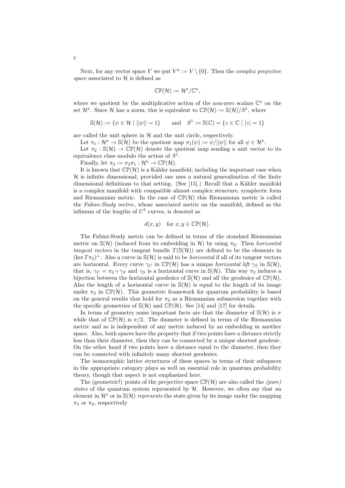
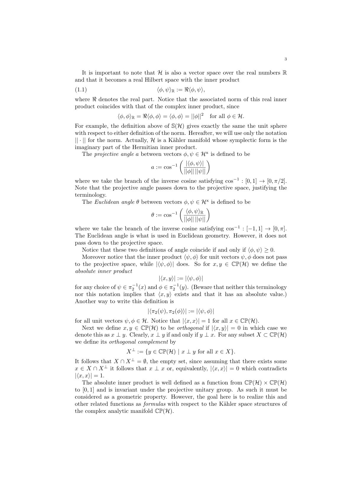
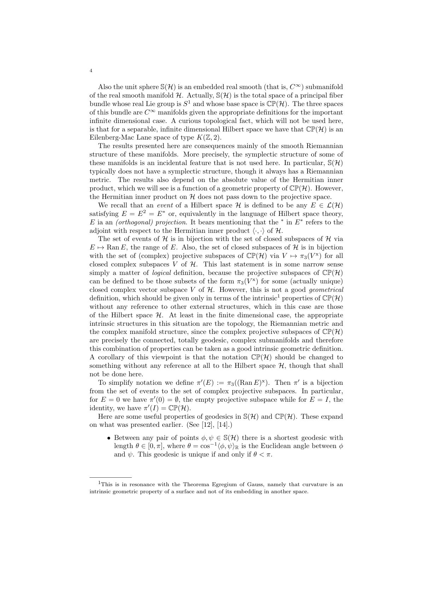
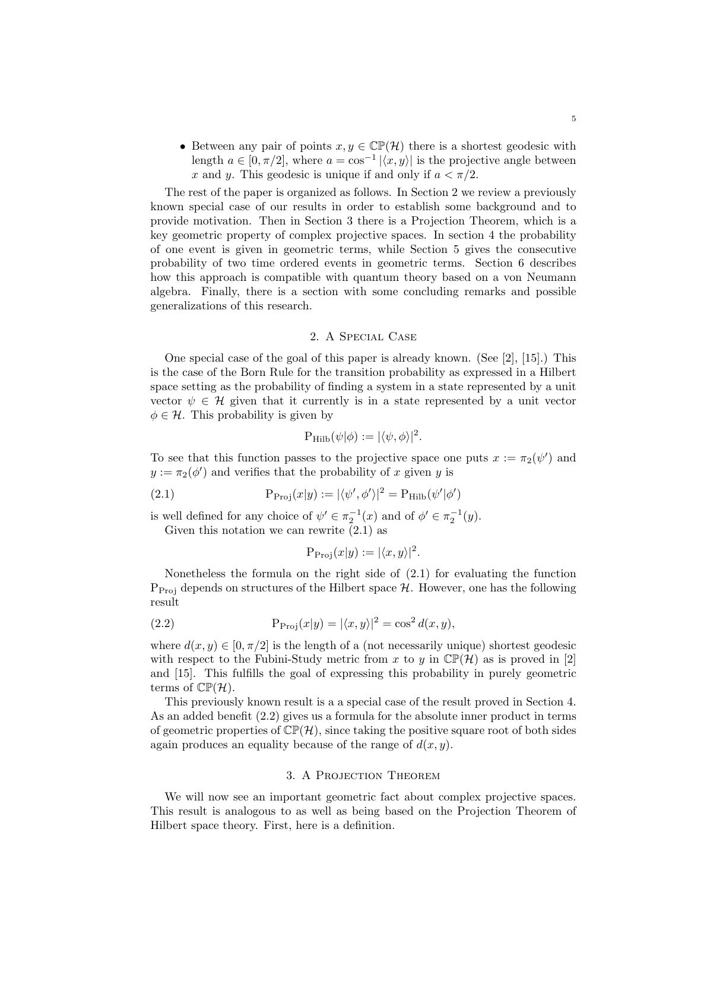
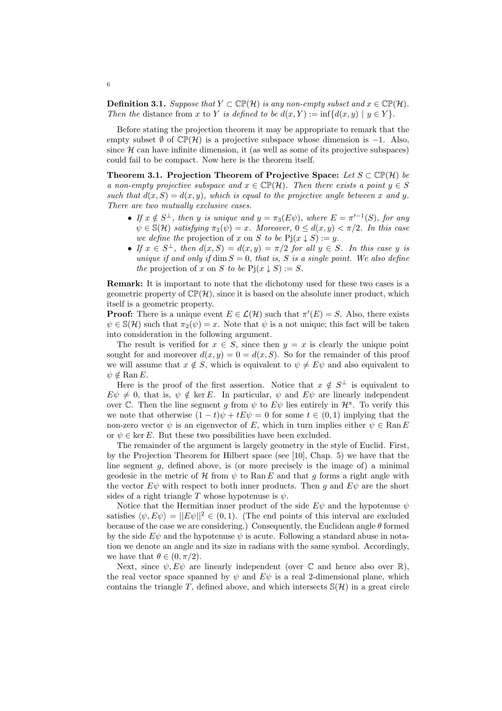
Summary. This paper provides a purely geometric foundation for quantum mechanics by showing that all probability rules can be derived from the intrinsic metric properties of complex projective space. By removing the need for an underlying linear Hilbert space, it supports a broader program of geometrizing physics and allows for potential generalizations of quantum theory in other geometric settings.
Why it may be interesting. not directly relevant
Main problem. The paper aims to reformulate all quantum probability formulas (single and consecutive events) using only the intrinsic geometric properties of complex projective space, removing the dependency on the underlying linear Hilbert space structure.
Main result. The author demonstrates that the Born rule and Wigner's rule for consecutive events can be expressed purely through the Fubini-Study metric and geodesics of the Kähler manifold CP(H), establishing a projection theorem for projective space.
Method. The study employs the mathematical framework of Riemannian submersions, the Fubini-Study metric, and the theory of geodesics within complex projective geometry to reinterpret Hilbert space operators as geometric subspaces.
Model / system. The framework applies to a general quantum system represented by a complex Hilbert space (finite or infinite-dimensional) where pure states are identified with points in the complex projective space CP(H).
Key observables. Quantum transition probabilities (Born rule), single event probabilities, and consecutive event probabilities.
Important parameters / regimes. The Fubini-Study metric distance d(x, y), the projective angle, and the dimension of the Hilbert space (dim >= 2).
Assumptions / limitations. The Hilbert space is assumed to be complex with a Hermitian inner product; the paper notes potential non-compactness issues in infinite-dimensional settings.
Paper structure. The paper begins with a review of Hilbert space structures, transitions to the geometric properties of the Kähler manifold CP(H), proves a projection theorem for projective subspaces, and concludes by demonstrating how probability rules and von Neumann algebras are recovered geometrically.
In a recent paper it was shown that all the Hilbert space formulas for quantum probabilities can be realized as functions of geometric properties of the associated projective space, but those functions were expressed using the structures of the associated Hilbert space. In this paper a direct description of all these probabilities is given as formulas involving only the geometric properties of the projective space itself without referring to the associated Hilbert space theory. In large part this depends on a projection theorem for complex projective space which is analogous to the projection theorem for Hilbert spaces. The importance of this is that this exhibits quantum probability in terms of the geometry of a Riemannian metric in a non-linear Kähler manifold without any reference to a linear Hilbert space. As such this is a part of a larger program of the geometrization of physics. This opens the possibility of generalizations of quantum theory in other similar geometric settings. The theory presented includes projective spaces of both finite and infinite dimension. Some comments explain how quantum theory based on a von Neumann algebra is compatible with this approach.
Authors: Ranitha Mataraarachchi, François Le Gall, Suguru Tamaki
Type: theory · Category: quantum information and computing · PDF: https://arxiv.org/pdf/2605.18241v1
Analysis basis: full PDF text, analyzed in chunks
Topic relevance: entanglement & information structure 2/5
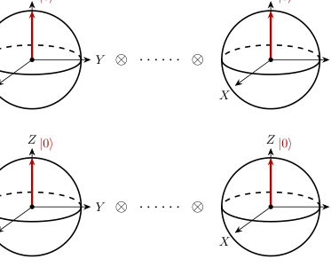
Summary. This paper introduces a quantum algorithm that outperforms the standard Grover bound for energy estimation and state preparation of k-local Hamiltonians. By shifting the target from the absolute ground state to an energy threshold reachable by low-depth circuits, the authors leverage the high density of states to achieve a speedup governed by the binary entropy function. This provides a fundamental distinction between highly entangled states and those with efficient classical descriptions.
Why it may be interesting. not directly relevant
Main problem. Efficiently estimating the ground-state energy and preparing low-energy states for general k-local Hamiltonians, specifically aiming to break the Grover bound of O*(2^{n/2}).
Main result. The authors present a quantum algorithm that achieves an even faster runtime than previous methods, with a scaling governed by the binary entropy function, by targeting an energy threshold achievable by low-depth circuits.
Method. The approach uses spectral analysis, the Cauchy Interlacing Theorem, and a perturbation strategy on a 'quiet set' of qubits to prove an exponentially dense spectrum of low-energy states near a specific energy threshold.
Model / system. The study considers n-qubit k-local Hamiltonians, which are general all-to-all interacting systems without specific geometric or spatial structure assumptions.
Key observables. Ground-state energy estimation, energy threshold (Ed), and cumulative spectral count N(E).
Important parameters / regimes. k-locality, circuit depth (d), total interaction strength (M), and the binary entropy function H(.).
Assumptions / limitations. The algorithm assumes the target energy threshold is achievable by low-depth circuits and relies on the k-local nature of the Hamiltonian.
Figures summary. Figure 1 provides a visual representation of applying a local unitary perturbation (Pauli X operator) to a qubit within a quiet set to transform the zero state to the one state.
Paper structure. The paper introduces the problem of energy estimation, defines an effective Hamiltonian via low-depth circuits, provides a spectral density lower bound using perturbation theory, and concludes with the construction and complexity analysis of the new quantum algorithm.
Low-energy estimation and state preparation for general $k$-local Hamiltonians are fundamental challenges in quantum complexity theory. For constant relative accuracy, Buhrman et al. (PRL 2025) recently broke the natural Grover bound $O(2^{n/2})$, where $n$ denotes the number of qubits, for both problems. In this paper, for any sufficiently small parameter $d\ge 0$, we present an even faster quantum algorithm that outputs a quantum state with energy bounded by the minimum energy over all depth-$d$ states (i.e., states obtained by applying a depth-$d$ circuit to the all-zero state), together with an estimate of this energy. For the class of Hamiltonians with depth-$d$ ground states, our algorithm furthermore achieves exactly the same energy guarantees as Buhrman et al. Our results also provide insight into the distinction between strongly entangled states and those admitting efficient classical descriptions.
Authors: Justus Neumann, Hermann Kampermann, Dagmar Bruß, Anton Trushechkin
Type: theory · Category: quantum information and computing · PDF: https://arxiv.org/pdf/2605.18399v1
Analysis basis: full PDF text, analyzed in chunks
Topic relevance: entanglement & information structure 2/5
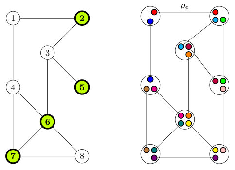
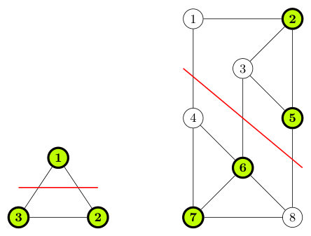
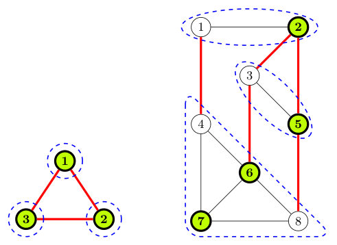
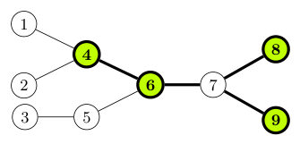
Summary. This paper establishes fundamental limits on how much secret key can be distilled in quantum networks where connections are made of bipartite entangled pairs. It proves that for these specific networks, the most efficient way to create a group key is simply to perform standard bipartite QKD on each link and then merge the results.
Why it may be interesting. not directly relevant
Main problem. The paper investigates the upper bounds on the distillable conference key rate in quantum conference key agreement (QCKA) within near-term quantum networks.
Main result. The authors prove that for pair-entangled networks, multipartite strategies do not outperform bipartite-based strategies, and they derive upper bounds on the key rate based on network topology and the regularized entanglement of formation.
Method. The study uses information-theoretic tools including the multipartite Devetak-Winter formula, von Neumann entropy, and graph theory (cuts and partitions) to derive and prove the tightness of bounds.
Model / system. The model consists of pair-entangled networks (PENs) where nodes are connected by sources of bipartite entangled states (e.g., Bell states) distributed along the edges of a graph.
Key observables. Distillable conference key rate (r_key), multipartite Devetable-Winter key rate (r_DW), and von Neumann entropy.
Important parameters / regimes. Network topology (graph structure), degree of entanglement of the sources, and the number of secrecy-seeking parties (N).
Assumptions / limitations. The network operates under local operations and shared randomness (LOSR) without quantum memory, and helper nodes are assumed to be trusted.
Figures summary. Figure 1 illustrates the network graph and participants; Figure 2 shows the 'weakest cut' bound; Figure 3 demonstrates how vertex partitions provide stronger bounds; Figure 4 illustrates tree networks.
Paper structure. The paper introduces the QCKA task in PENs, establishes upper bounds for the Devetak-Winter rate, analyzes specific network topologies like tree and 3-node networks, and generalizes the bounds to mixed states using regularized entanglement of formation.
We investigate the task of conference key agreement in near-term quantum networks, where the nodes are connected by sources of bipartite entangled states, under the class of local operations not requiring quantum memory. We derive upper bounds on the distillable conference key depending on the network topology and degree of entanglement of the sources, and prove tightness of these bounds for some particular cases. In these cases, we show that pairwise bipartite key distillation followed by merging the bipartite keys into the conference key is optimal.
Authors: Aanjaneya Kumar, James Holehouse
Type: theory · Category: statistical mechanics · PDF: https://arxiv.org/pdf/2605.16693v1
Analysis basis: full PDF text, analyzed in chunks
Topic relevance: non-equilibrium dynamics 2/5
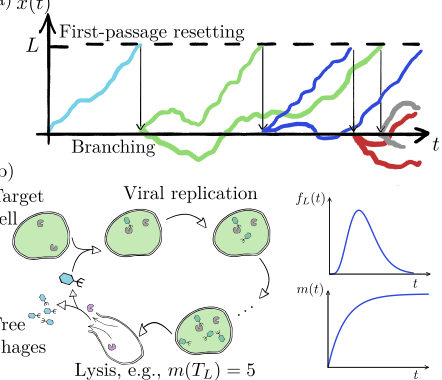
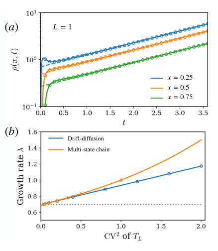
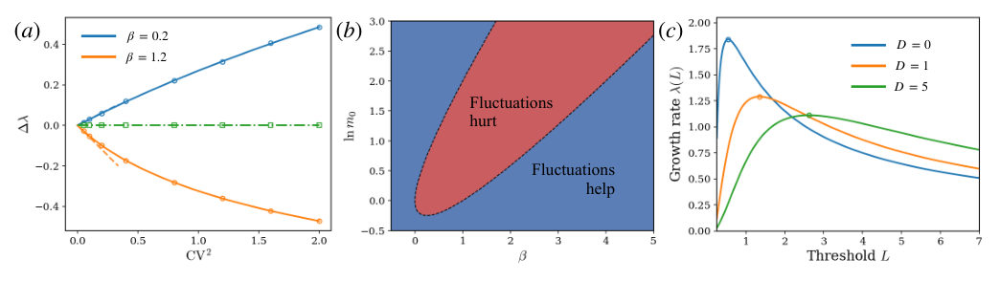
Summary. This paper introduces a framework for branching processes where replication is triggered by an internal stochastic variable reaching a threshold. It demonstrates that timing fluctuations can optimize population growth by balancing the benefit of higher offspring yield against the cost of delayed reproduction. The theory is successfully validated against experimental data from bacteriophage lysis.
Why it may be interesting. The framework of first-passage resetting and the mapping between microscopic stochasticity and macroscopic growth rates are highly relevant to the study of non-equilibrium dynamics and the stability of populations in open quantum systems.
Main problem. Understanding how stochastic fluctuations in replication timing, driven by internal first-passage dynamics, affect the macroscopic population growth rate and the trade-off between offspring yield and reproduction delay.
Main result. The authors derive an exact renewal equation showing that for fixed yields, timing fluctuations necessarily enhance growth, while for time-dependent yields, fluctuations can either enhance or reduce growth depending on a specific yield-delay trade-off.
Method. The study uses a renewal approach, Laplace transforms, and a generalized Euler-Lotka equation, supplemented by small-fluctuation expansions and the use of the Lambert W function for analytical optimization.
Model / system. A branching process where replication events are triggered when an internal stochastic variable reaches a threshold (First-Passage Resetting). Models include drift-diffusion processes and multi-state Erlang/Gamma chains, with applications to bacteriophage lysis.
Key observables. Population growth rate (lambda), first-passage time (TL), offspring number/yield (m), and the coefficient of variation (CV^2) of the timing.
Important parameters / regimes. Threshold (L), drift velocity (vd), diffusion constant (D), power-law yield exponent (beta), and the yield-delay trade-off regime.
Assumptions / limitations. Assumes the existence of a probability density for first-passage times and that the population dynamics can be described by a generalized Bellman-Harris/Euler-Lotka framework.
Figures summary. Figure 1 shows the core model and phage lysis application; Figure 2 compares population density and growth rate vs. variability for different stochastic clocks; Figure 3 illustrates the impact of diffusion on growth.
Paper structure. Introduction of the BFPR framework, derivation of the exact renewal equation, analysis of fixed-yield vs. time-dependent yield regimes, optimization of the yield-delay trade-off, and experimental validation using bacteriophage data.
Many biological processes, from cell division to viral lysis, are triggered when an internal stochastic variable reaches a threshold. Here we introduce Branching under First-Passage Resetting, a general framework in which replication events arise endogenously from first-passage dynamics rather than from externally imposed lifetime clocks. We show that the resulting population dynamics obey an exact renewal equation linking single-trajectory first-passage statistics to the population growth rate. This mapping shows that, for fixed offspring number and fixed mean replication time, stochastic timing fluctuations necessarily enhance growth relative to a deterministic clock. When offspring yield depends on the first-passage time, however, fluctuations have non-trivial effects and expose a fundamental yield-delay trade-off: waiting longer can increase the number of descendants, but delays all future lineages. Our framework allows us to address this optimization problem analytically, and upon application to bacteriophage lysis, gives an optimal lysis time and growth rate consistent with empirical data.
Authors: Aleksey Alekseev, Agnieszka Cichy, Konrad Jerzy Kapcia
Type: theory · Category: strongly correlated electrons · PDF: https://arxiv.org/pdf/2605.18575v1
Analysis basis: full PDF text, analyzed in chunks
Topic relevance: Kondo & dissipative impurity 2/5
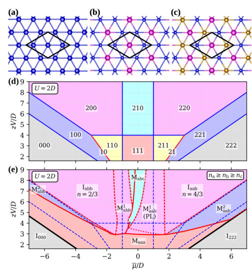
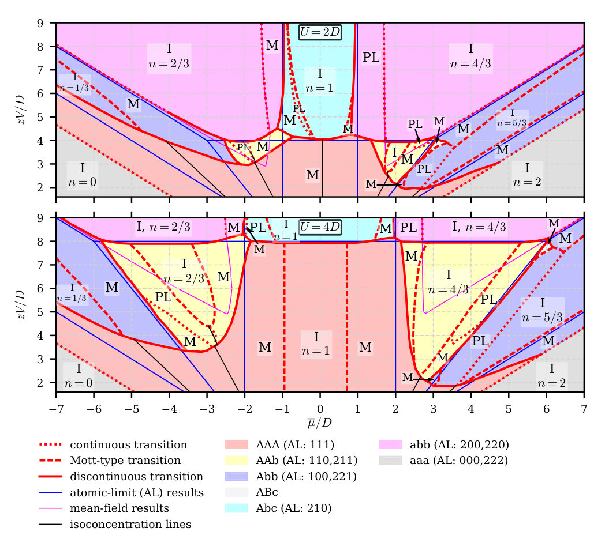
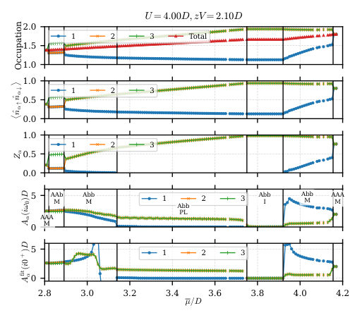
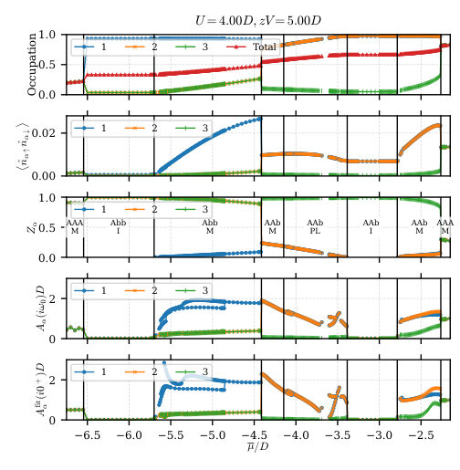
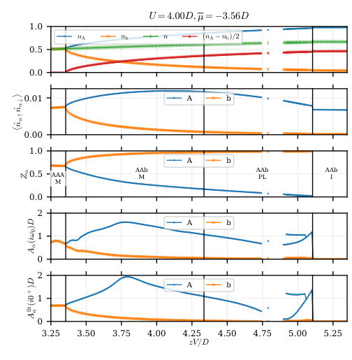
Summary. This paper uses DMFT to map out the phase diagram of the extended Hubbard model on a triangular lattice. It discovers various charge-ordered and pinball-liquid phases, highlighting how Mott physics and intersite repulsion compete to drive different types of electronic localization.
Why it may be interesting. not directly relevant
Main problem. Investigating the complex phase diagram of charge-ordering phenomena and the interplay between Mott physics and intersite interactions on a triangular lattice.
Main result. The study identifies a rich phase diagram containing various pinball-liquid (PL) phases, distinguishing between Mott-localization-driven and charge-transfer-driven types, and reveals strong particle-hole asymmetry.
Method. Dynamical Mean-Field Theory (DMFT) using the Lanczos algorithm to solve the Anderson Impurity Model, supplemented by Mean-Field Approximation (MFA) and Atomic-Limit (AL) analysis.
Model / system. The Extended Hubbard Model (EHM) on a triangular lattice, incorporating onsite interaction (U), nearest-neighbor interaction (V), and hopping amplitude (t).
Key observables. Sublattice occupation numbers, quasiparticle weights (Z), spectral functions, and grand potential.
Important parameters / regimes. Onsite interaction (U), intersite interaction (V), chemical potential (mu), and bandwidth (D).
Assumptions / limitations. Neglects magnetic ordering, neglects spatial correlations by treating intersite interaction at the Hartree level, and focuses on the zero-temperature ground state.
Figures summary. Visualizations of charge-order types, the atomic-limit phase diagram, DMFT phase diagrams with color-coded regions, and sublattice-specific spectral functions.
Paper structure. The paper defines the mathematical framework and model, reviews established limits (AL and MFA), presents the new DMFT phase diagrams, and analyzes specific spectral properties and phase transitions.
Triangular-lattice systems attract a lot of attention due to various frustration-induced and strongly correlated effects. Here, we focus on the charge-ordering phenomenon by means of investigation of the extended Hubbard model with dynamical mean-field theory (DMFT). By considering the intersite nearest-neighbor interaction we have found a very rich phase diagram that contains large number of features, phases, and phase transitions. Among them are pinball-liquid (PL) phases where we distinguish charge-transfer-driven and Mott-localization-driven PLs; phase transitions that change their order as model parameters evolve (from discontinuous to continuous); very strong particle-hole asymmetry. Various features of the phase diagram are found to be better understood by means of the simple mean-field approximation (MFA). Moreover, besides helping with interpretation of the phase diagram, the MFA results together with results for the atomic-limit model are found to be able to set rather good expectations on how the DMFT phase diagram should look like. Nevertheless, a few features were not expected and are found within the DMFT, such as a small-region intermediate metallic phase on an electron-doped side of the phase diagram.
Authors: A. Boasso, C. D. Fosco, B. C. Guntsche, F. D. Mazzitelli
Type: theory · Category: other · PDF: https://arxiv.org/pdf/2605.17124v1
Analysis basis: full PDF text, analyzed in chunks
Topic relevance: Keldysh / 2PI / non-Gaussian methods 2/5
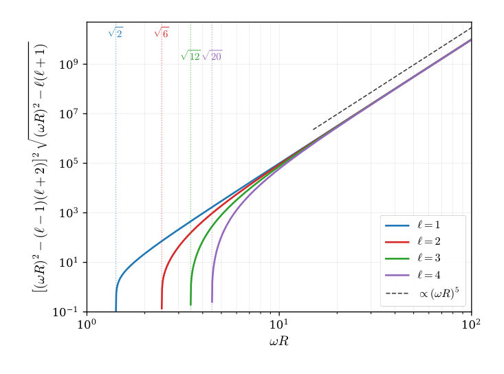
Summary. This paper develops a new covariant method to calculate the nonlocal effective action for quantum fields near curved boundaries. It successfully applies this framework to predict particle production in oscillating geometric structures, such as spheres and rings, providing a more general approach than previous coordinate-dependent methods.
Why it may be interesting. not directly relevant
Main problem. Deriving a covariant expansion of the nonlocal effective action for a massless scalar field on a manifold with a curved boundary, extending beyond previous Monge-patch-based methods.
Main result. The authors establish a geometric framework for the nonlocal effective action in terms of the extrinsic curvature tensor, providing specific results for particle creation rates in oscillating 2+1D rings and 3+1D spheres.
Method. The study utilizes a heat-kernel approach and the Barvinsky-Vilkovsky reconstruction method to derive the expansion, applying it to time-dependent geometries via Wick rotation and perturbation theory.
Model / system. A massless real scalar field in a flat (d+1)-dimensional bulk with a smooth, curved boundary subject to Dirichlet or Neumann boundary conditions, including specific models of oscillating rings and spheres.
Key observables. Nonlocal effective action, particle creation rate, and the mean number of created particles.
Important parameters / regimes. Extrinsic curvature tensor (K_ab), dimension (d), oscillation frequency (omega), deformation amplitude (epsilon), and boundary conditions (Dirichlet/Neumann).
Assumptions / limitations. The bulk manifold is assumed to be flat, the boundary is smooth, and the expansion is valid in the regime where curvature gradients dominate over nonlinear curvature effects.
Figures summary. Figure 1 shows the dimensionless mean number of created particles per unit time as a function of omega*R for various multipoles, illustrating a threshold frequency for radiation and a universal high-frequency scaling.
Paper structure. The paper progresses from defining the heat-kernel expansion and geometric framework to deriving the quadratic order expansion in extrinsic curvature, followed by applications to oscillating ring and sphere geometries and validation against existing models.
We study the nonlocal effective action of a massless scalar field defined on a flat manifold with a curved boundary. Using a heat-kernel approach, we derive a covariant expansion of the nonlocal contribution to quadratic order in the extrinsic curvature tensor. Our construction provides a geometric framework that both reproduces earlier results obtained for Monge-patch embeddings and extends them to more general surfaces that need not admit a global Monge-patch description. The expansion is valid in the regime where gradients of the extrinsic curvature dominate over nonlinear curvature effects. As an application, we compute the particle-creation rate for an oscillating deformed ring in $2+1$ dimensions and an oscillating deformed sphere in $3+1$ dimensions.
Authors: Mehmet Emre Tasgin
Type: theory · Category: quantum information and computing · PDF: https://arxiv.org/pdf/2605.18708v1
Analysis basis: full PDF text, analyzed in chunks
Topic relevance: quantum measurements 2/5
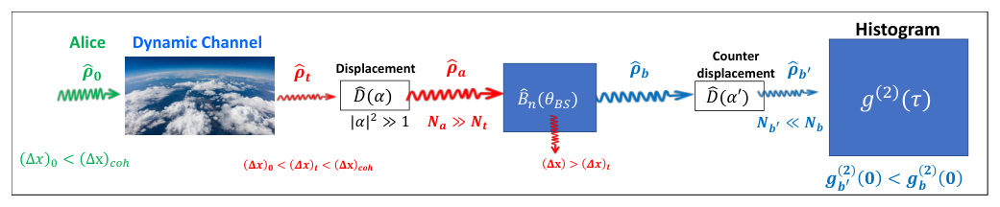
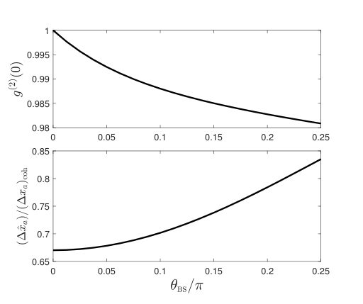
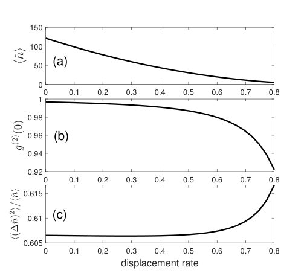
Summary. The paper presents a method to identify quadrature squeezing even when the signal's amplitude fluctuates randomly between pulses. By using a specific interaction to convert quadrature squeezing into number squeezing, the authors show that the nonclassical signature becomes detectable and remains invariant under signal attenuation.
Why it may be interesting. It provides a robust protocol for quantum state verification in noisy, fluctuating channels, which is critical for quantum communication and sensing in real-world environments like atmospheric links.
Main problem. How to detect quadrature squeezing in a signal when each received copy has a different, unknown random displacement due to environmental noise or channel fluctuations.
Main result. The authors propose an interaction Hamiltonian that converts quadrature squeezing into number squeezing, allowing for detection via the second-order correlation function g(2)(0) which remains robust against random displacements and attenuation.
Method. The paper uses an operator formalism (Pegg-Barnett) and the Baker-Campbell-Hausdorff lemma to derive a beam-splitter-like transformation that maps quadrature variables to number-phase variables, supplemented by numerical simulations in a finite Fock space.
Model / system. A two-mode system consisting of an incident squeezed mode and a number-phase mode, with potential implementations in circuit QED (Josephson junctions), atomic ensembles (Raman transitions), and nonlinear optics (Kerr nonlinearities).
Key observables. Second-order correlation function g(2)(0), normalized number variance, and the g(2)(tau) histogram.
Important parameters / regimes. Large photon number regime (n >> 1), squeezing rates, displacement amplitudes, and transmission coefficient (eta).
Assumptions / limitations. The large-occupation approximation is used for the validity of the number-phase commutation relation, and the environment/loss mode is assumed to be in the vacuum state.
Figures summary. Figure 1 shows the detection protocol schematic (displacement, conversion, and detection); Figure 2 illustrates the conversion of quadrature squeezing to number squeezing; Figure 3 shows the enhancement of signal visibility via counter-displacement.
Paper structure. The paper introduces the problem of random displacements, defines the conversion Hamiltonian and its operator properties, proves the non-generation of nonclassicality, demonstrates the conversion mechanism and entanglement generation, provides an analytical proof of g(2)(0) invariance under loss, and discusses physical implementations.
We address a fundamental question: Can one determine whether a received signal is squeezed when each copy arrives with a different displacement/amplitude? We introduce an interaction Hamiltonian that converts quadrature squeezing into number squeezing. Using this conversion, we test whether the copies satisfy $g^{(2)}(0)<1$. The Hamiltonian itself does not create nonclassicality; it only transfers it from quadrature squeezing to number squeezing. This allows us to identify squeezing even when individual copies have random displacements.
Authors: Sayan Sircar, Kabir Ramola
Type: theory · Category: statistical mechanics · PDF: https://arxiv.org/pdf/2605.18312v1
Analysis basis: full PDF text, analyzed in chunks
Topic relevance: non-equilibrium universality 2/5
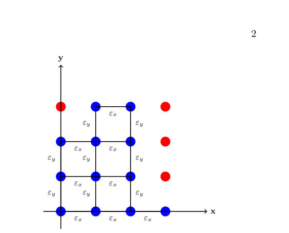
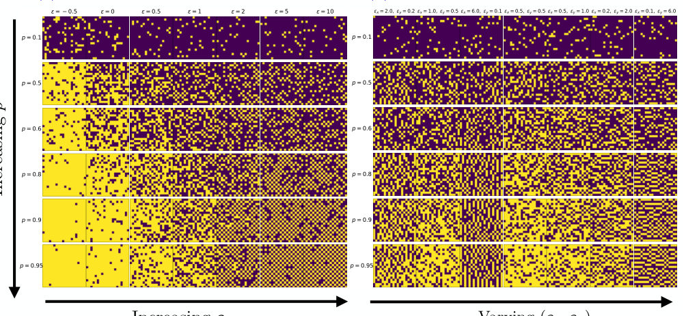
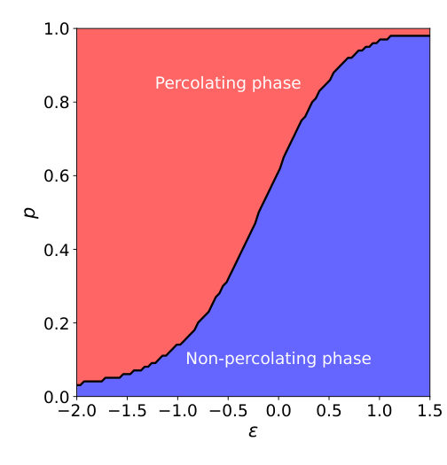
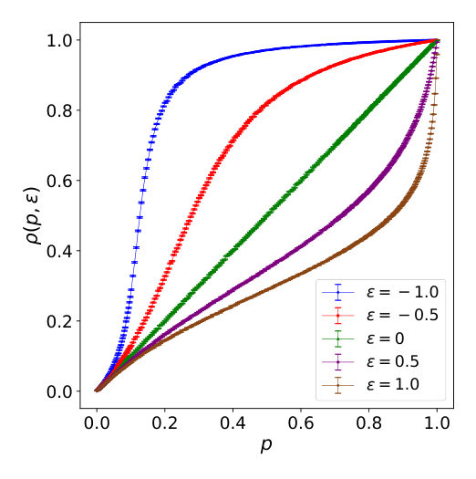
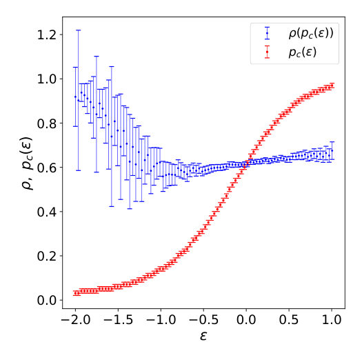
Summary. This paper generalizes 2D site percolation by introducing a bond energy cost, demonstrating that this parameter can continuously tune the system between different universality classes. By using renormalization group and Monte Carlo methods, the authors show how connectivity and critical exponents evolve as a function of the energetic cost.
Why it may be interesting. not directly relevant
Main problem. The study investigates how assigning an energy cost to bonds between nearest-neighbor occupied sites affects the percolation threshold, critical exponents, and universality classes in 2D site percolation.
Main result. The bond energy epsilon acts as a tuning parameter that shifts the percolation threshold and drives a continuous evolution of the correlation length exponent nu from 1/2 to 4/3 to 1, effectively interpolating between different universality classes.
Method. The authors employ Monte Carlo simulations in a grand-canonical ensemble, real-space renormalization group (RG) methods using Kadanoff block recursions, and a Coulomb-gas formulation to interpret scaling behavior.
Model / system. An energy-weighted site percolation model on a 2D square lattice where each bond between nearest-neighbor occupied sites incurs an energy cost epsilon, creating a competition between entropy and energetic suppression.
Key observables. Percolation threshold (pc), correlation length (xi) and its exponent (nu), cluster size distribution, and susceptibility (chi).
Important parameters / regimes. Site occupation probability (p), bond energy cost (epsilon), and anisotropic energy components (epsilon_x, epsilon_y).
Assumptions / limitations. The analysis assumes the validity of real-space RG approximations and uses specific renormalization rules (e.g., R0, R2) for block-based calculations.
Figures summary. Figures illustrate lattice configurations with energy costs, phase diagrams of cluster configurations, RG flow diagrams around fixed points, and scaling collapses of wrapping probability and density.
Paper structure. The paper introduces the energy-weighted model, details the Monte Carlo and RG methodologies, presents results for isotropic and anisotropic cases, provides a Coulomb-gas interpretation, and concludes with a discussion on lattice gas RG approaches.
We study a generalization of two-dimensional site percolation by assigning an energy cost $\varepsilon$ to bonds between nearest-neighbor occupied sites. This leads to a competition between entropy-driven cluster growth and energetic suppression (or enhancement) of connectivity. Varying $\varepsilon$ continuously interpolates between dense ferromagnetic-like clusters, ordinary classical percolation, and a dilute regime of minimally connected isolated clusters. Using Monte Carlo simulations and real-space renormalization-group (RG) methods, we show that bond energy shifts the percolation threshold smoothly. We define an energy-weighted correlation length that remains finite at the classical site occupation threshold ($p_c(\varepsilon=0)$) and shrinks with increasing $\varepsilon$, capturing the energetic suppression of large-scale connectivity. The cluster size distribution exhibits an energy-dependent cutoff that drives the transition from percolation-like clusters to isolated clusters. A real-space RG with Kadanoff block recursions reveals a systematic evolution of the correlation-length exponent $ν$ from $ν=1/2$ (dense clusters) to $ν=4/3$ (classical percolation), approaching $ν=1$ (minimally connected isolated clusters), in agreement with Coulomb-gas predictions for loop models where bond energy renormalizes loop fugacity. For large values of \(\varepsilon\) (isotropic case), the suppression of nearest-neighbor bonds results in the emergence of antiferromagnetic sub-lattice ordering at high densities. Additionally, anisotropic bond energies lead to directionally selective cluster growth. Finally, we also discuss a lattice gas RG approach and scenarios where bond energy is renormalized across different scales.
Authors: Pengcheng Hou, Zhiyi Li, Youjin Deng, Kun Chen
Type: theory · Category: strongly correlated electrons · PDF: https://arxiv.org/pdf/2605.16888v1
Analysis basis: full PDF text, analyzed in chunks
Topic relevance: Keldysh / 2PI / non-Gaussian methods 2/5
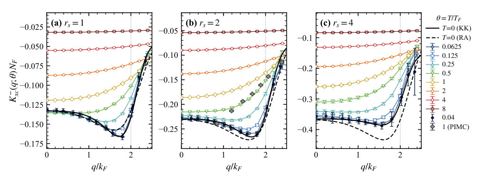
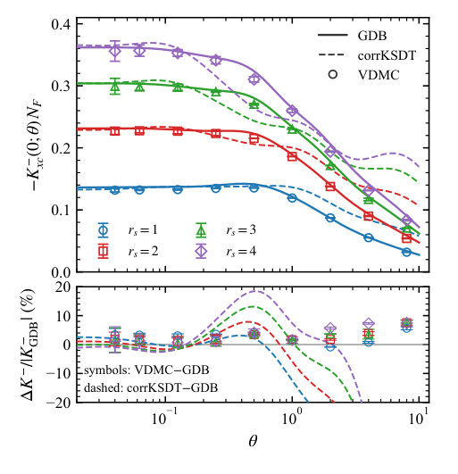
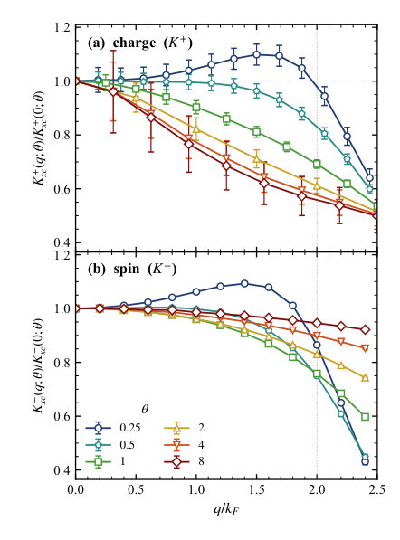
Summary. This paper uses variational diagrammatic Monte Carlo to provide the first-principles spin exchange-correlation kernel for the uniform electron gas across a wide temperature range. It identifies discrepancies in current warm-dense matter models and demonstrates how thermal effects lead to a transition toward a local, momentum-independent spin response.
Why it may be interesting. not directly relevant
Main problem. The finite-temperature spin response of the uniform electron gas (UEG) is poorly constrained, particularly regarding the momentum-resolved spin exchange-correlation kernel across quantum-degenerate, warm-dense, and classical regimes.
Main result. The study provides first-principles data for the spin XC kernel, revealing that heating suppresses spin-correlation structures and Stoner enhancement, and identifying a 'warm-dense residual' error in current LSDA parametrizations.
Method. Variational diagrammatic Monte Carlo (VDMC) using a screened-interaction formulation and the Principle of Minimal Sensitivity (PMS) to ensure convergence.
Model / system. A 3D unpolarized uniform electron gas (UEG) at metallic densities, covering regimes from quantum-degenerate to classical temperatures.
Key observables. Static spin exchange-correlation kernel Kxc(q;T), spin stiffness (alpha_xc), Stoner enhancement, and the spin-interpolation exponent (p*).
Important parameters / regimes. Wigner-Seitz radius (rs) between 1 and 4, reduced temperature (theta = T/TF) from 0.25 to 8, and momentum transfer (q/kF).
Assumptions / limitations. The use of a Yukawa-type screening scale for the VDMC stability and the reliance on the PDW spin-interpolation ansatz for evaluating the spin-polarization dependence.
Figures summary. Figure 1 shows the dimensionless spin XC kernel for various densities; Figure 2 compares spin stiffness and kernel values against LSDA models (GDB, corrKSDT); Supplemental figures show VDMC convergence and the temperature-driven flattening of the kernel.
Paper structure. The paper introduces the problem of spin-response constraints, describes the VDMC methodology and convergence, presents results for the spin XC kernel across temperature and density, benchmarks these results against existing LSDA models, and discusses the high-temperature classical limit.
The finite-temperature spin response of the uniform electron gas (UEG) is a fundamental reference for spin-polarized and magnetized electron liquids, including warm dense matter (WDM), yet it remains far less constrained than charge response. Using variational diagrammatic Monte Carlo, we compute the static spin exchange--correlation (XC) kernel $K_{xc}(q;T)$ of the unpolarized UEG at metallic densities across the quantum-degenerate, warm-dense, and classical regimes. The kernel connects smoothly to zero-temperature spin-response parametrizations at low temperature, while heating suppresses the Fermi-surface-scale spin-correlation structure and weakens the XC-driven Stoner enhancement. Its long-wavelength limit provides a direct response test of the spin stiffness implied by thermal local-spin-density-approximation (LSDA) parametrizations, showing low-temperature consistency while exposing a resolved warm-dense residual in current LSDA parametrizations. In the classical regime, the spin XC kernel becomes nearly local on the Fermi-momentum scale, in sharp contrast to the corresponding charge XC kernel. These results provide a first-principles basis for finite-temperature spin-response theory and magnetized WDM modeling.
Authors: Hanyan Cao, Ge Yan, Yuxuan Du, Feng Pan
Type: theory · Category: quantum information and computing · PDF: https://arxiv.org/pdf/2605.17230v1
Analysis basis: full PDF text, analyzed in chunks
Topic relevance: methods for driven-dissipative 2/5
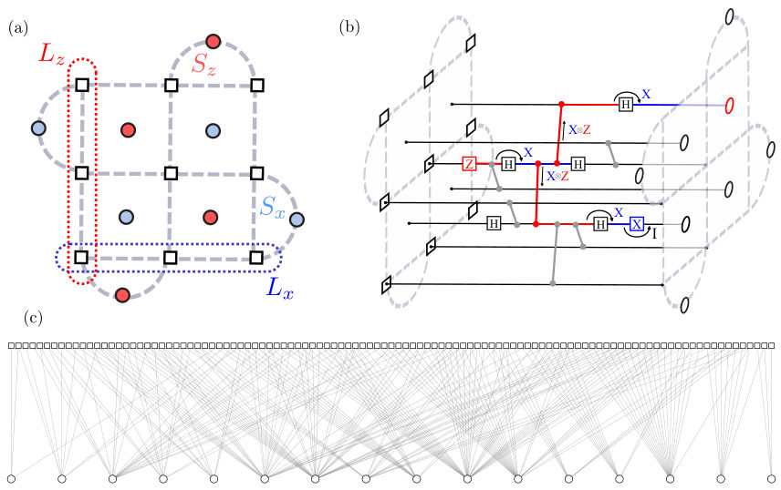
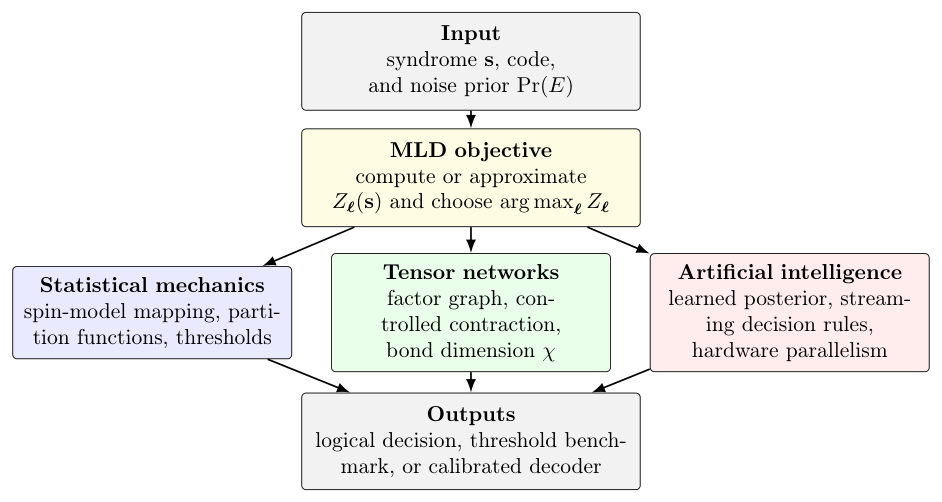
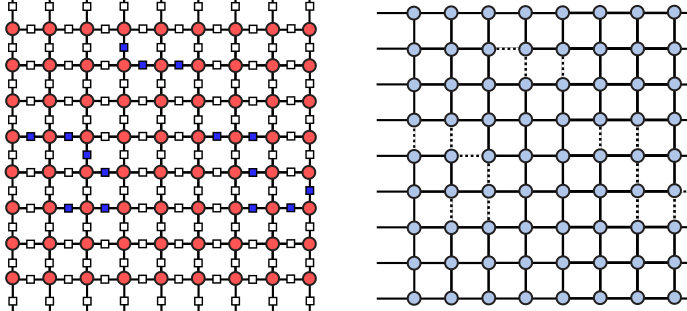
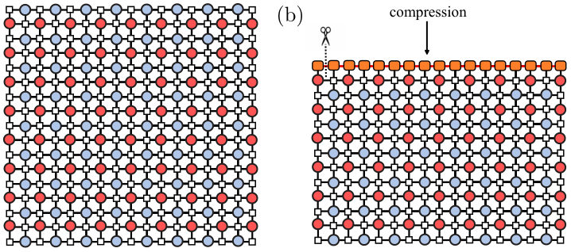
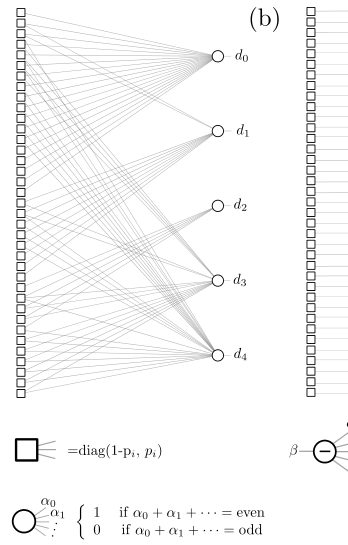
Summary. This review explores the optimal strategy for quantum error correction, known as Maximum Likelihood Decoding, which is computationally difficult but essential for high-fidelity quantum computing. It synthesizes recent breakthroughs from statistical mechanics, tensor networks, and machine learning to show how we can approximate this optimal decoding efficiently. The paper highlights the critical need for low-latency decoders to enable real-time fault-tolerant quantum computation.
Why it may be interesting. not directly relevant
Main problem. The computational intractability (#P-hard) of Maximum Likelihood Decoding (MLD) in quantum error correction, which is necessary to account for error degeneracy and achieve optimal error thresholds.
Main result. The paper provides a unified review of MLD approximation strategies, demonstrating how statistical mechanics, tensor networks, and artificial intelligence offer complementary paths to approach MLD accuracy with polynomial complexity.
Method. A survey of three analytical lenses: mapping decoding to disordered spin models (statistical mechanics), approximate contraction of factor graphs (tensor networks), and learning error distributions via generative models (AI).
Model / system. Quantum stabilizer codes, including surface, color, and qLDPC codes, subject to various noise models such as Pauli, phenomenological, and circuit-level noise.
Key observables. Logical error rate, error threshold (p_th), and coset partition function Z(l, s).
Important parameters / regimes. Code distance (d), error rate (p), code rate (k/n), and the Nishimori line in the phase diagram.
Assumptions / limitations. The review focuses primarily on stabilizer codes and Pauli-type noise models, though it discusses the challenges of extending these to non-Pauli effects like leakage and crosstalk.
Figures summary. Figure 1 shows the surface code decoding pipeline and detector error models; Figure 2 provides a roadmap of the three MLD perspectives; Figure 3 compares different decoding approaches.
Paper structure. The paper is structured as a topical review, first establishing the MLD objective and its complexity, then analyzing it through the lenses of statistical mechanics, tensor networks, and AI, and concluding with hardware integration challenges and future directions.
Quantum error correction (QEC) is indispensable for realizing fault-tolerant quantum computation, yet its effectiveness hinges critically on the classical decoding algorithm that interprets noisy syndrome measurements. Among all possible decoding strategies, maximum likelihood decoding (MLD) is provably optimal, since it identifies the logical group with largest likelihood by summing over all possible errors within logical class consistent with the observed syndrome. Despite its optimality, MLD is computationally intractable in general (#P-hard), motivating a rich landscape of exact and approximate algorithms. In this topical review, we provide a unified perspective on MLD by surveying recent advances through three complementary lenses: statistical mechanics, tensor networks, and artificial intelligence. From the statistical mechanics viewpoint, the MLD problem maps onto evaluating partition functions of disordered spin models, enabling exact solutions for certain codes and noise models as well as threshold estimation via phase-transition analysis. From the tensor network perspective, approximate contraction of tensor networks on the code's factor graph yields decoders that closely approach MLD accuracy with polynomial computational cost. From the artificial intelligence perspective, neural-network-based decoders, including autoregressive generative models and recurrent transformers, learn to approximate the MLD distribution from data, achieving high accuracy with the parallelism afforded by modern hardware accelerators. We discuss the connections among these three approaches, review their application to both simulated and experimental quantum hardware, and outline open challenges including real-time decoding, scalability to large code distances, and generalization to high-rate quantum low-density parity-check codes.
Authors: Jeongbin Jo
Type: theory · Category: quantum information and computing · PDF: https://arxiv.org/pdf/2605.17996v1
Analysis basis: full PDF text, analyzed in chunks
Topic relevance: non-equilibrium dynamics 2/5
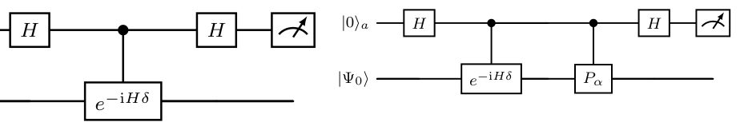
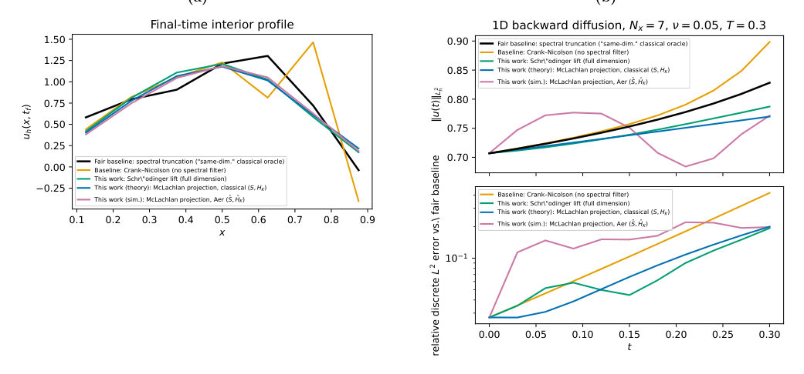
Summary. The paper demonstrates that projecting Schrödingerized dynamics onto a low-dimensional subspace provides a natural regularization mechanism for ill-posed problems. It proves that this method remains stable even under statistical sampling noise, outperforming unregularized numerical integration.
Why it may be interesting. This is highly relevant for researchers in open quantum systems and quantum algorithms, as it provides a rigorous framework for using subspace-based reduced dynamics to stabilize the simulation of non-unitary or dissipative processes on noisy quantum hardware.
Main problem. Investigating whether the McLachlan projection of Schrödingerized dynamics can act as a structured regularizer for ill-posed problems like backward diffusion, and quantifying the error budget arising from lifting, projection, and statistical sampling.
Main result. The paper proves that the reduced flow is unique and norm-preserving, and establishes that the projection error serves as a bounded regularizer that prevents the catastrophic blow-up seen in unregularized methods, even when using noisy sampled Hamiltonians.
Method. The authors use the Schrödingerization framework to embed non-unitary dynamics into a Hermitian space, then apply McLachlan projection onto a low-dimensional subspace, evaluating the pipeline using Qiskit Aer-simulated Hadamard tests.
Model / system. A 1D semidiscrete backward diffusion model, which is an ill-posed evolution where high spatial frequencies grow exponentially, embedded into a higher-dimensional Hermitian Hamiltonian.
Key observables. Recovered interior state profiles (u_h), discrete relative L2 error, projection defect (eta_V), and the conditioning of the overlap matrix (S).
Important parameters / regimes. Diffusion coefficient (nu = 0.05), final time (T = 0.3), spatial grid size (Nx = 7), and lifted dimension (Np = 16).
Assumptions / limitations. The analysis assumes the use of a fixed low-dimensional frame for projection and considers the impact of statistical sampling noise on the overlap matrix and Hamiltonian elements.
Figures summary. Figure 2(a) compares recovered interior states across different methods, while Figure 2(b) plots the evolution of the discrete relative L2 error over time for the proposed method, classical baselines, and the unstable Crank-Nicolson method.
Paper structure. The paper introduces the ill-posedness of backward diffusion, defines the Schrödingerization and McLachlan projection framework, provides mathematical proofs for error bounds and stability, and concludes with numerical benchmarks using quantum circuit simulations.
Backward diffusion is a prototype ill-posed evolution: high spatial frequencies grow exponentially in time, so mesh-based time marching without explicit regularization is quickly overwhelmed by noise. Schrödingerization embeds the semidiscrete generator into Hermitian dynamics on an extended space; we ask whether McLachlan projection onto a fixed low-dimensional frame supplies a structured regularizer whose error budget can be read from a projection defect that separates full lifted propagation from the reduced trajectory. We prove uniqueness of the reduced flow, Gram-norm conservation, a lifted--reduced gap bound in terms of that defect, and perturbation estimates that highlight overlap-matrix conditioning when matrix elements are estimated statistically. We also spell out a fair classical baseline -- spectral low-pass or Tikhonov filtering on the same semidiscrete model, with bandwidth or ridge strength matched to the information content of the chosen frame -- so numerical contrasts isolate the Schrödingerized reduced pipeline rather than an unregularized Crank--Nicolson march that mainly showcases blow-up. A calibrated one-dimensional benchmark pairs a spectrally truncated reference with snapshot-built subspace evolution and finite-shot Qiskit Aer estimation, illustrating how lift, projection, and sampling layers contribute differently to the overall error.
Authors: Abhoy Kole, Till Schnittka, Rolf Drechsler
Type: theory · Category: quantum information and computing · PDF: https://arxiv.org/pdf/2605.18159v1
Analysis basis: full PDF text, analyzed in chunks
Topic relevance: quantum measurements 2/5
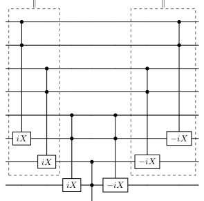
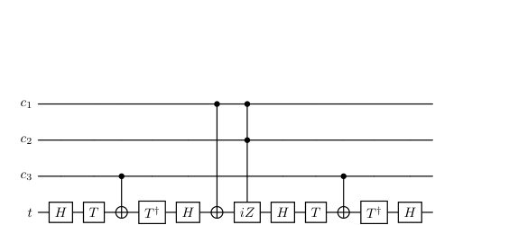
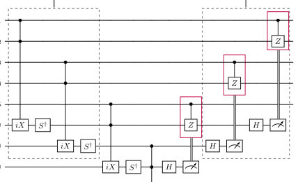
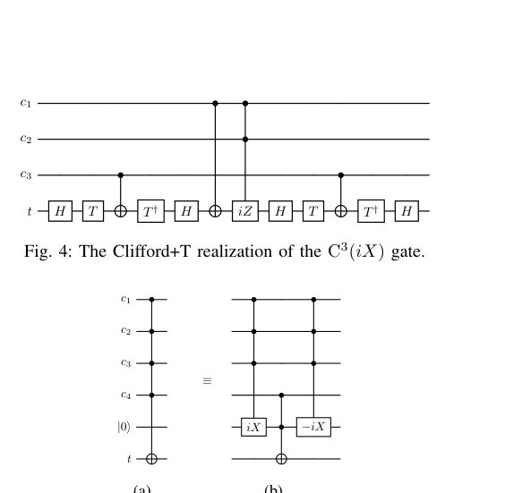
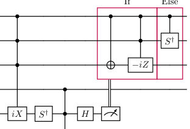
Summary. This paper presents new ways to build complex multi-controlled Toffoli gates by using mid-circuit measurements and classical feedback. By replacing static gate sequences with adaptive ones, the authors significantly reduce the number of expensive T-gates and entangling gates needed, which is crucial for scaling fault-tolerant quantum computers.
Why it may be interesting. not directly relevant
Main problem. The high resource overhead (T-count, T-depth, and CX-count) required to implement multi-controlled Toffoli gates in fault-tolerant quantum architectures.
Main result. The authors propose dynamic decomposition strategies that use mid-circuit measurements and classical feedforward to systematically reduce T-count, T-depth, and entangling gate counts compared to static methods.
Method. The method utilizes adaptive circuit execution, relative-phase Toffoli primitives, and measurement-conditioned phase corrections (using ancilla-assisted constructions) to optimize gate sequences.
Model / system. The work focuses on the Clifford+T gate set within fault-tolerant quantum computing architectures capable of mid-circuit measurement, qubit reset, and classical feedforword.
Key observables. T-count, T-depth, CX-count, and ancilla overhead.
Important parameters / regimes. The number of control qubits (n), the number of ancilla qubits used (n-2 or (n-2)/2), and the measurement outcomes in the Hadamard basis.
Assumptions / limitations. The approach assumes the availability of mid-circuit measurement, qubit reset, and classical feedforward, and focuses specifically on the Clifford+T regime.
Figures summary. Figures 1 and 4 show Clifford+T realizations of relative-phase gates; Figures 2, 3, 5, 6, 7, and 8 illustrate various decompositions of multi-controlled Toffoli gates (C4X, C5X, C11X) using both static and dynamic strategies.
Paper structure. The paper introduces the problem of multi-controlled Toffoli gate overhead, proposes dynamic decomposition strategies using relative-phase primitives and measurement-driven optimization, provides analytical cost models comparing static and dynamic costs, and demonstrates scalability through specific constructions for even and odd n.
The Toffoli gate is a fundamental building block for quantum arithmetic and reversible logic, yet its efficient realization remains a major challenge in both near-term and fault-tolerant quantum architectures. Recent advances in dynamic quantum circuit capabilities, including mid-circuit measurement and classical feedforward, provide new opportunities for reducing the resource overhead of non-Clifford operations. In this work, we propose a set of dynamic decomposition strategies for multi-controlled Toffoli gates that exploit adaptive circuit execution and ancilla-assisted constructions. Our methods systematically reduce entangling-gate count, T-count, and T-depth compared with conventional static decompositions, while preserving fault-tolerance guarantees. Through analytical cost models and experimental evaluation, we demonstrate that relative-phase primitives and measurement-conditioned corrections enable scalable implementations with improved depth and resource efficiency.
Authors: Makoto R. Kikuchi, Yuria Kobayashi, Satoshi Takada
Type: theory · Category: statistical mechanics · PDF: https://arxiv.org/pdf/2605.17881v1
Analysis basis: full PDF text, analyzed in chunks
Topic relevance: non-equilibrium dynamics 2/5
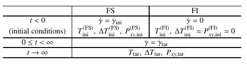
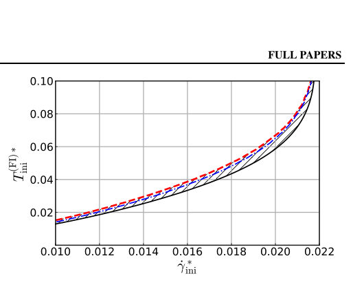
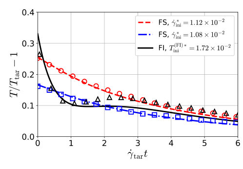
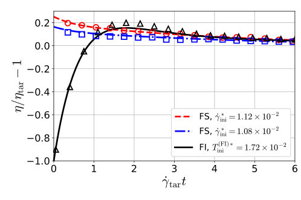
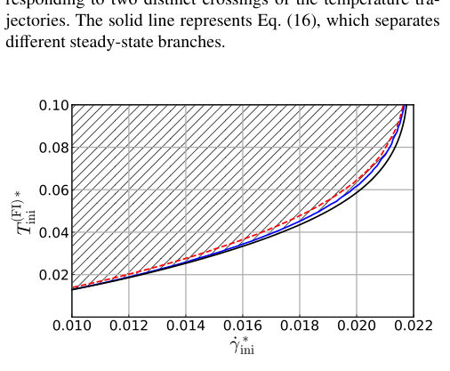
Summary. This paper explores how non-equilibrium relaxation in a sheared granular gas can exhibit the Mpemba effect for both temperature and viscosity. It reveals that introducing a velocity-dependent dissipation mechanism allows for multiple crossings in relaxation curves, providing a purely kinetic mechanism for multiple Mpemba effects.
Why it may be interesting. not directly relevant
Main problem. The study investigates the Mpemba effect—where a system at a higher initial temperature relaxes faster than one at a lower temperature—within the context of a sheared granular gas with velocity-dependent dissipation.
Main result. The authors demonstrate both a temperature Mpemba effect and a viscosity Mpemba effect, further discovering that a velocity-dependent restitution coefficient enables multiple crossings (multiple Mpemba effects) in the relaxation curves.
Method. The research utilizes kinetic theory based on Grad's moment method to derive evolution equations, which are then validated using Direct Simulation Monte Carlo (DSMC) simulations.
Model / system. A dilute, sheared granular gas of identical, frictionless hard spheres. The model features a velocity-dependent restitution coefficient that follows a stepwise function, introducing an intrinsic velocity scale.
Key observables. Granular temperature (T), temperature anisotropy (delta T), shear viscosity (eta), and shear stress (Pxy).
Important parameters / regimes. Shear rate (gamma_dot), restitution coefficients (e1, e2), threshold velocity (vc), and the dimensionless parameter x = mv_c^2/(4T).
Assumptions / limitations. The model assumes a dilute limit where binary collisions dominate, neglects spatial inhomogeneities (macroscopic uniformity), and neglects collisional transfer contributions to the stress tensor.
Figures summary. Figure 1 shows temperature relaxation curves crossing; Figure 2 shows viscosity relaxation curves crossing; Figure 3 and 4 present phase diagrams for the temperature and viscosity Mpemba effects, respectively, showing the parameter ranges for single and multiple crossings.
Paper structure. The paper introduces the Mpemba effect in granular gases, describes the kinetic theory and DSMC methodology, presents results for temperature and viscosity relaxation, analyzes the phase diagrams for single and multiple crossings, and concludes with discussion on the kinetic mechanism.
We investigate the Mpemba effect in a dilute sheared granular gas with a velocity-dependent restitution coefficient. Using kinetic theory based on Grad's moment method, we analyze the relaxation dynamics following a sudden change in the shear rate. We show that, despite having a higher initial temperature, a system starting from an isotropic state can relax faster than a system prepared in a sheared steady state, demonstrating a clear Mpemba effect in the temperature evolution. We further demonstrate the emergence of a viscosity Mpemba effect, characterized by crossings in the relaxation curves of the shear viscosity. Remarkably, multiple crossings arise due to an additional intrinsic timescale introduced by the velocity dependence of the restitution coefficient, providing a minimal kinetic mechanism for multiple Mpemba effects in driven granular gases.
Authors: Stephan Schiller, Juan M. Cornejo, Nikita Poljakov, Christian Ospelkaus, Stefan Ulmer, Dimitar Bakalov
Type: both · Category: other · PDF: https://arxiv.org/pdf/2605.16585v1
Analysis basis: full PDF text, analyzed in chunks
Topic relevance: quantum measurements 2/5
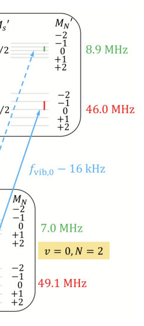
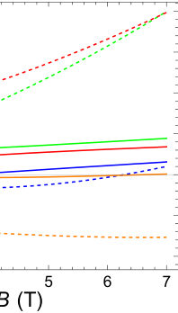
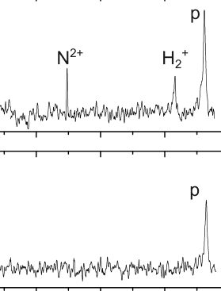
Summary. This paper investigates the potential for testing CPT invariance by comparing the vibrational spectra of hydrogen molecular ions and their antimatter counterparts in Penning traps. It identifies optimal spectroscopic transitions and provides a roadmap for achieving fractional uncertainties as low as 10^-17. The work highlights how managing magnetic and electric field-induced shifts is crucial for the success of such fundamental symmetry tests.
Why it may be interesting. This paper is highly relevant for AMO physicists working on precision spectroscopy and antimatter research, as it defines the fundamental limits of frequency metrology using molecular ions and proposes new methods for controlling systematic errors in high-precision traps.
Main problem. Evaluating the feasibility of using high-accuracy spectroscopy of H2+ and anti-H2- in Penning traps to perform tests of CPT invariance.
Main result. The authors demonstrate that comparing vibrational frequencies at a fractional level of 1e-17 is a realistic prospect using existing technology, provided specific transitions and trap parameters are optimized to mitigate systematic shifts.
Method. The study uses an extensive theoretical analysis of spectroscopic transitions, including the derivation of systematic shifts (Zeeman, Stark, Doppler) and the evaluation of different detection regimes like continuous Stern-Gerlach effect and quantum-logic spectroscopy.
Model / system. The physical system consists of molecular hydrogen ions (H2+) and their antimatter counterparts (anti-H2-) trapped in cryogenic Penning traps under strong magnetic fields (e.g., 4 T). The model utilizes an effective Hamiltonian including hyperfine, Zeeman, rotational, and diamagnetic interactions.
Key observables. Vibrational transition frequencies, electron-spin-flip frequency, magnetic moments of proton/antiproton, and frequency differences between matter and antimatter species.
Important parameters / regimes. Magnetic field strength (B ~ 4 T), fractional uncertainty target (1e-17 to 1e-18), axial and radial temperatures, and vibrational/rotational quantum numbers.
Assumptions / limitations. Assumes the eventual availability of anti-H2- for study and that magnetic field stability and trap parameters (like the magnetic bottle coefficient) can be controlled with extreme precision.
Figures summary. The notes mention a schematic of spin state energies and predicted spectroscopic line shapes under different quadrupole Doppler shift regimes.
Paper structure. The paper introduces the CPT test proposal, provides a detailed Hamiltonian analysis of the molecular ions, evaluates various systematic frequency shifts, discusses experimental detection strategies (CSGE and QLS), and analyzes methods for mitigating Doppler and Stark shifts.
The comparison of vibrational transition frequencies of $\mathrm{H}_2^+$ and $\overline{\mathrm{H}}_2^-$ offers a new opportunity to test CPT invariance. Myers [Phys. Rev. A 98, 010101(R) (2018)] proposed performing laser spectroscopy in a Penning trap (PT) with non-destructive read-out. Here, we provide an extensive analysis of this proposal, introduce novel aspects, and discuss its implementation in PTs that incorporate either the continuous Stern-Gerlach effect or quantum-logic spectroscopy. We derive estimates for the achievable accuracy of the test. We find that a comparison of the vibrational frequencies at a fractional level of $1\times10^{-17}$ is a realistic prospect, using technology that is mostly already available. We also analyze complementary CPT invariance tests, namely those of the g-factor of the bound electron/positron via electron-spin-resonance spectroscopy and of the magnetic moment of the proton/antiproton via radiofrequency spectroscopy.
Authors: Qi Wang, Ming Li
Type: theory · Category: statistical mechanics · PDF: https://arxiv.org/pdf/2605.16987v1
Analysis basis: full PDF text, analyzed in chunks
Topic relevance: non-equilibrium universality 2/5
Summary. This paper explores how the geometry and statistics of strongly connected clusters change as a system moves from low dimensions to the infinite-dimensional mean-field limit. It discovers that complete graphs behave fundamentally differently from high-dimensional lattices due to a double-scaling phenomenon in cluster sizes. These findings provide a deeper understanding of connectivity transitions in directed networks.
Why it may be interesting. not directly relevant
Main problem. The study investigates the percolation transition of strongly connected clusters (SCCs) in directed bond percolation across various dimensions, from 2D hypercubic lattices to the mean-field limit of complete graphs.
Main result. The authors identify an upper critical dimension of d_u = 6 and reveal that while hypercubic lattices follow standard scaling, complete graphs exhibit a unique double-scaling structure in cluster size distribution and logarithmic growth of the number of SCCs.
Method. Extensive Monte Carlo simulations using Tarjan's algorithm for SCC identification, combined with finite-size scaling (FSS) analysis and Binder cumulant data collapse.
Model / system. Directed bond percolation on hypercubic lattices (d=2 to 7) and complete graphs, where each directed bond is independently occupied with probability p.
Key observables. Fractal dimensions (d_SCC, d_IC, d_OC), percolation threshold (p_c), cluster size distribution exponent (tau_SCC), and the mean number of SCCs (N_SCC).
Important parameters / regimes. Dimension (d), occupation probability (p), upper critical dimension (d_u = 6), and the mean-field limit (complete graphs).
Assumptions / limitations. The study assumes statistical symmetry between incoming and outgoing paths; the effect of broken directional asymmetry is not addressed.
Figures summary. Figure 1 shows the bow-tie structure of directed graphs; Figure 2 illustrates SCC percolation on a 2D lattice; Figure 9 compares cluster-size distribution scaling between d=7 and complete graphs; Figure 10 compares the scaling of the mean number of SCCs.
Paper structure. The paper introduces the SCC percolation problem, describes the directed bond model, presents numerical results for fractal dimensions and scaling exponents across dimensions, compares finite-dimensional lattices to complete graphs, and discusses the structural origins of the observed scaling differences.
We study the percolation of strongly connected clusters (SCCs), in which sites are mutually reachable through directed paths, in systems with randomly oriented bonds by extensive simulations on hypercubic lattices from dimension $d=2$ to $7$ and complete graphs. Below the upper critical dimension $d_u=6$, the critical SCCs exhibit nontrivial fractal dimension $d_{\rm SCC}$, and the size distribution scales as $\sim s^{-τ_{\rm SCC}}$ with the hyperscaling relation $τ_{\rm SCC}=1+d/d_{\rm SCC}$. For $d \ge d_u$, mean-field behavior is recovered with $d_{\rm SCC}/d=1/3$, consistent with complete-graph results. However, in contrast to hypercubic lattices, complete graphs exhibit a double-scaling structure in the SCC size distribution: large SCCs are governed by mean-field value $τ_{\rm SCC}=4$, while small SCCs follow a distinct power law with exponent $τ'=1$. At criticality, the giant in- and out-clusters are also fractal, sharing the same dimension as standard percolation clusters. These results show that critical SCCs remain well-defined fractal objects across dimensions, while their approach to the mean-field limit involves nontrivial changes in cluster statistics.
Authors: Sae Nishiyama, Haruka Mima, Jun-ichi Hayashi, Keiki Takeda, Chihiro Sekine, Yoshiya Uwatoko, Hiroki Takahashi, Hiroshi Tanida, Yukihiro Kawamura
Type: experiment · Category: strongly correlated electrons · PDF: https://arxiv.org/pdf/2605.18230v1
Analysis basis: full PDF text, analyzed in chunks
Topic relevance: Kondo & dissipative impurity 2/5
Summary. This study demonstrates how applied pressure can tune the magnetic and structural phases of the heavy-fermion material CeMnSi. It reveals that suppressing Mn-3d magnetism leads to non-Fermi-liquid behavior and that a structural transition at high pressure modifies the electronic state. The findings highlight the strong coupling between Ce-4f electrons and the crystal lattice.
Why it may be interesting. not directly relevant
Main problem. Investigating the pressure-induced evolution of electronic, magnetic, and structural properties in the heavy-fermion antiferromagnet CeMnSi, specifically the interplay between Ce-4f and Mn-3d electrons.
Main result. Pressure suppresses Mn antiferromagnetic order at 1.3 GPa, inducing non-Fermi-liquid behavior and a new magnetic anomaly, followed by a structural transition to a monoclinic phase at 5.7 GPa.
Method. High-pressure electrical resistivity measurements using piston-cylinder and cubic-anvil apparatus, and synchrotron powder X-ray diffraction.
Model / system. The physical system is CeMnSi, a heavy-fermion antiferromagnet with a tetragonal CeFeSi-type structure, compared against the non-4f reference compound LaMnSi.
Key observables. Néel temperature (TN), pressure-induced anomaly temperature (TM), structural transition pressure (Ps), resistivity exponent (n), and lattice constants (a, c).
Important parameters / regimes. Critical pressures Pc ~ 1.3 GPa and Ps ~ 5.7 GPa; temperature scales for Mn-AFM order and heavy-fermion formation.
Assumptions / limitations. The structural transition is driven by lattice instabilities associated with Ce-4f electrons rather than pure valence instability.
Figures summary. Fig 1: Crystal structure; Fig 2: Temperature dependence of resistivity under pressure; Fig 3: Resistivity power-law fits and exponent n; Fig 4: XRD patterns and lattice constants; Fig 5: High-pressure XRD patterns.
Paper structure. The paper introduces the CeMnSi system, details the experimental pressure/temperature setup, presents transport and structural results showing magnetic and structural transitions, and concludes with a discussion on the 3d-4f hybridization mechanism.
We investigated pressure effects on the nontrivial heavy-fermion antiferromagnet CeMnSi by means of electrical resistivity and powder X-ray diffraction. With increasing pressure, the antiferromagnetic order of Mn (T_N ~ 240 K at ambient pressure) is rapidly suppressed and disappears at P_c ~ 1.3 GPa. Instead, a pressure-induced anomaly appears at T_M ~ 97 K and shifts to higher temperatures with increasing pressure. The switching of the Mn magnetic state may reflect a modification of the magnetic symmetry of the system, which could influence the stability of the heavy-fermion state. In the low-pressure region, non-Fermi-liquid-like behavior characterized by nearly T-linear resistivity is observed around 0.7 GPa. In addition, the resistivity shows a marked reduction below T_M and a qualitative change toward more metallic behavior above the structural transition pressure P_s ~ 5.7 GPa. At ambient pressure, CeMnSi exhibits negative thermal expansion below ~40 K, which is absent in LaMnSi, supporting the formation of a heavy-fermion ground state.
Authors: Alberto Marchisio, Aayan Ebrahim, Nouhaila Innan, Muhammad Kashif, Muhammad Shafique
Type: both · Category: quantum information and computing · PDF: https://arxiv.org/pdf/2605.18333v1
Analysis basis: full PDF text, analyzed in chunks
Topic relevance: QC/QI experiment 2/5
Summary. This paper introduces QLIF-CAST, a lightweight hybrid quantum neural network designed for time-series forecasting. By using shallow single-qubit circuits to model neuronal dynamics, the model significantly reduces training time compared to deeper quantum models while outperforming classical counterparts in prediction accuracy.
Why it may be interesting. not directly relevant
Main problem. The challenge of developing efficient and accurate quantum-classical hybrid architectures for multivariate time-series weather forecasting, specifically addressing the high computational cost of deep variational quantum models.
Main result. The QLIF-CAST model achieves 15.4% lower MSE than a classical LIF baseline and converges up to 94% faster than state-of-the-art QLSTM and QNN models, while maintaining hardware reliability on a 156-qubit QPU.
Method. The authors use a hybrid recurrent architecture with surrogate gradient training (arctan approximation) and a vectorized circuit execution strategy to achieve a 500x speedup in simulation.
Model / system. A hybrid quantum-classical recurrent architecture (QLIF-CAST) utilizing a depth-2, single-qubit circuit where neuron excitation states are encoded as quantum superpositions driven by Rx rotations and T1 relaxation decay.
Key observables. Mean Squared Error (MSE), Mean Absolute Error (MAE), Root Mean Square Error (RMSE), and R-squared (R2).
Important parameters / regimes. T1 relaxation constant of 10.0, spike threshold of 0.75, and 12-step context windows.
Assumptions / limitations. The model assumes that the higher error in certain benchmarks remains within operational tolerances for practical deployment and that the shallow circuit depth is sufficient to capture necessary dynamics.
Figures summary. Fig 1 illustrates the QLIF neuron model; Fig 2 shows the classical LIF model; Fig 7 shows training/validation loss convergence; Fig 8 and 9 show forecasting performance for air quality and wind speed respectively.
Paper structure. The paper introduces the QLIF-CAST model, describes the quantum neuronal dynamics and architecture, presents a controlled comparison against classical LIF, performs a cross-domain benchmark against QLSTM/QNN, and concludes with hardware verification on IBM Marrakesh.
Accurate and efficient time-series forecasting remains a challenging problem for both classical and quantum neural architectures, particularly in multivariate environmental settings. This work adapts the Quantum Leaky Integrate-and-Fire (QLIF) spiking neural network for time-series regression tasks, specifically short-term multivariate weather forecasting. We extend QLIF beyond classification and demonstrate its applicability to continuous-valued prediction problems. The QLIF-CAST model encodes neuron excitation states as single-qubit quantum superpositions, driven by Rx rotation gates and T1 relaxation decay, and is embedded within a hybrid quantum-classical recurrent architecture. We conduct two distinct evaluations. First, a controlled comparison against a parameter-matched classical LIF baseline on a multivariate weather dataset shows that QLIF-CAST achieves 15.4% lower MSE and 4.4% lower MAE, demonstrating that quantum neuronal dynamics reduce prediction error over classical equivalents. Second, a cross-domain comparative analysis with state-of-the-art quantum LSTM (QLSTM) and quantum neural network (QNN) models on air quality and wind speed benchmarks reveals that QLIF-CAST converges in up to 94% less training time, occupying a distinct position in the speed-error trade-off space. Hardware verification on IBM Marrakesh (156-qubit QPU) confirms reliable circuit execution with only 1.2% average deviation from simulation.
Authors: Y. Mo, G. D. Su
Type: theory · Category: quantum information and computing · PDF: https://arxiv.org/pdf/2605.18031v1
Analysis basis: full PDF text, analyzed in chunks
Topic relevance: quantum measurements 2/5
Summary. This paper proposes a hybrid framework where quantum processors serve as 'sidecars' to classical AI models, providing bounded signals for tasks like routing or weight updates. It explores two modes of operation: a stateful mode that preserves quantum resources and a stateless mode based on frequent resets. The study shows how these quantum primitives can act as useful priors for classical optimization and selection processes.
Why it may be interesting. not directly relevant
Main problem. Addressing the scaling bottlenecks of large-scale classical AI by proposing a hybrid 'quantum sidecar' architecture that acts as a bounded signal generator for classical pipelines.
Main result. The paper demonstrates that quantum sidecars can operate in two modes—stateful (preserving observables via protected registers) and stateless (reset-and-reprepare)—to provide useful priors for tasks like routing and parameter updates.
Method. The authors use density-matrix and statevector simulations of small-scale quantum circuits (4-8 qubits) under depolarizing noise, cross-checked with Qiskit utilities.
Model / system. The architecture involves a quantum co-processor interacting with a classical LLM, utilizing either a protected register with QND-style parity readout or a parameterized QAOA-style circuit for sampling.
Key observables. Parity accuracy (q_t), fidelity (F_t), and probability mass of top-k update directions.
Important parameters / regimes. Qubit counts (n=4, 6, 8), depolarizing noise levels, and reset overhead times (20 ns to 1200 ns).
Assumptions / limitations. The work does not claim quantum advantage; simulations are synthetic and do not represent actual hardware performance; the 'weight-state' is a speculative long-term vision.
Figures summary. Fig 1 shows the high-level sidecar interface; Fig 2 and 3 illustrate the stability and noise-driven degradation of the 8-qubit QND readout; Fig 11 illustrates a classical software interface for a router.
Paper structure. The paper identifies AI bottlenecks, defines the sidecar architecture and its two operational modes, simulates the performance of both modes under noise, and concludes with a speculative outlook on quantum weight-states.
We propose a quantum sidecar architecture family for future hybrid AI training and inference. The central idea is not to store an entire Transformer in a small quantum memory, nor to claim one-shot collapse into a fully trained model or an optimal answer. Instead, we identify two physically distinct operating modes for quantum co-processors attached to classical large-model pipelines. The first is a stateful protected-register mode, in which a protected register stores a reusable quantum resource while an ancilla or temporary register performs QND-style readout. The second is a stateless reset-and-reprepare mode, in which each query prepares a task-conditioned quantum circuit, evolves over bounded training or inference control variables, measures candidate signals, resets the qubits, and repeats. We simulate the stateful mode using 2/4/6/8 protected-qubit density-matrix QND-style parity readout with one ancilla and a Qiskit cross-check. For the stateless mode, we include both an abstract candidate-update sampler and a circuit-level QAOA-style statevector sampler over structured candidate landscapes, followed by reset-overhead sensitivity analysis. The resulting framework positions quantum sidecars as bounded signal generators for optimizer-side sampling, adapter or expert selection, retrieval, routing, and reasoning-path proposal. As a speculative outlook, we introduce quantum weight-state sidecars: restricted quantum representations over model-control variables, not direct encodings of complete classical weight tensors.
Authors: Samira Sayedsalehi, Nader Bagherzadeh, Maxim Shcherbakov, Jean-Luc Gaudiot
Type: both · Category: quantum information and computing · PDF: https://arxiv.org/pdf/2605.17156v1
Analysis basis: full PDF text, analyzed in chunks
Topic relevance: QC/QI experiment 2/5
Summary. This paper presents a new neural decoder for surface codes that exploits the sparsity of error syndromes to achieve much faster decoding speeds. By using a Mamba state-space model to process only active defects, it maintains high accuracy while scaling linearly with the number of errors rather than the total lattice size.
Why it may be interesting. not directly relevant
Main problem. Existing neural decoders for quantum error correction (QEC) are computationally inefficient because they process dense syndrome arrays regardless of the actual error rate, leading to high latency as code distance increases.
Main result. The Sparse Mamba Decoder (SMD) achieves O(k) complexity by processing only active detection events, providing a 95-467x speedup over near-MLD decoders and significantly reducing logical error rates under SI1000 and Sycamore experimental noise.
Method. The authors introduce a defect-centric neural decoder using a Mamba state-space model backbone that processes a 13-dimensional feature vector for each active syndrome defect.
Model / system. The study focuses on the rotated surface code under various noise models, including depolarizing, uniform circuit-level, and SI1000 noise, as well as experimental data from the Google Sycamore processor.
Key observables. Logical error rate (LER), Frame Error Rate (FER), and decoding latency.
Important parameters / regimes. Code distance (d = 3 to 11), number of measurement rounds (R), and error rate (p approx 0.1%).
Assumptions / limitations. The effectiveness of the decoder relies on the inherent sparsity of syndromes at physically relevant, low error rates.
Figures summary. Figure 4 shows SMD outperforming MWPM under uniform noise; Figure 5 compares LER on Sycamore data; Figure 6 and 7 illustrate the speed-accuracy Pareto front under different noise regimes.
Paper structure. The paper introduces the inefficiency of dense decoders, describes the SMD architecture and feature engineering, details the training protocols (curriculum learning), presents performance benchmarks against classical and neural baselines, and concludes with future directions for scaling.
Quantum error correction (QEC) is essential for building fault-tolerant quantum computers, requiring decoders that are simultaneously accurate, fast, and scalable. Most state-of-the-art neural decoders achieve high accuracy but process the full dense syndrome array of size $O(d^2 R) $regardless of the actual error rate, where d is the code distance and R is the number of measurement rounds. At physically relevant error rates (p ~ 0.1%), fewer than 5% of syndrome entries contain active detection events -- yet existing decoders process the entire syndrome volume. We introduce the Sparse Mamba Decoder (SMD), a defect-centric neural decoder that processes only the k active detection events using a 13-dimensional feature representation per defect and a Mamba state-space backbone, achieving $O(k)$ complexity. Across depolarizing, uniform circuit-level, SI1000, and Google Sycamore experimental benchmarks, SMD reduces the MWPM logical error rate by up to 49% at $d \le 5$ under SI1000 noise, runs 95-467x faster than the Tesseract near-MLD decoder and 232-463x faster than Belief Matching, and maintains nearly constant latency (24-57 us) across d = 3-9 under uniform circuit-level noise. On the Sycamore experimental dataset, the SMD ensemble matches or slightly surpasses the dense Mamba decoder of Varbanov et al. All results are obtained on commodity NVIDIA GPUs with 7.5-16M parameters, without specialized accelerators.
Authors: Yaoxuan Yang, Ivi Afxenti, Majid Safari
Type: theory · Category: quantum information and computing · PDF: https://arxiv.org/pdf/2605.16678v1
Analysis basis: full PDF text, analyzed in chunks
Topic relevance: quantum measurements 2/5
Summary. The paper proposes an adaptive receiver design for satellite-based quantum key distribution that uses detector arrays to filter out noise-heavy regions caused by atmospheric turbulence. By selectively activating only the most promising detector elements, the system significantly improves the secret key rate. This approach is particularly effective in moderate turbulence conditions where spatial signal fluctuations are most pronounced.
Why it may be interesting. This paper is highly relevant to quantum optics and quantum networks as it addresses the practical challenge of maintaining entanglement/signal integrity in free-space quantum communication channels subject to decoherence-like atmospheric effects.
Main problem. Atmospheric turbulence in satellite-to-ground QKD causes spatial beam distortion and intensity fluctuations, leading to high background noise interference in single-element detectors.
Main result. A spatially adaptive detector activation strategy effectively reduces the Quantum Bit Error Rate (QBER) and improves the Secret Key Rate (SKR), with the highest performance gains observed in moderate turbulence regimes.
Method. The authors propose a threshold-based selection method and a 'Best-K' strategy to selectively activate detector elements with high signal probability, evaluated using Monte Carlo simulations and the Split-Step Fourier Method.
Model / system. A satellite-to-ground downlink QKD system using an 8x8 Single Photon Detector (SPD) array at 850 nm, modeling a 1200 km link with atmospheric turbulence via the Hufnagel-Valley model and Kolmogorov statistics.
Key observables. Quantum Bit Error Rate (QBER), Secret Key Rate (SKR), Sifted Bit Rate (SBR), and Error Bit Rate (EBR).
Important parameters / regimes. Turbulence strength (weak, moderate, strong), noise level (background and dark counts), focal length, and detector array size.
Assumptions / limitations. The channel is quasi-static within each clock period, the transmitter is an ideal single-photon source, and background noise is spatially uniform.
Figures summary. Fig 1 shows statistical model fitting (Gamma, lognormal, Gamma-Gamma) to intensity distributions; Fig 2 illustrates focal-plane speckle patterns under different turbulence and focal lengths; Fig 3 compares QBER and SKR for different strategies across turbulence regimes.
Paper structure. Introduction of the SatQKD problem, description of the physical system and turbulence model, presentation of the proposed adaptive detection strategies, statistical analysis of intensity distributions, performance evaluation via Monte Carlo simulations, and discussion of results and limitations.
Quantum key distribution (QKD) provides information-theoretic security and satellite-based quantum key distribution (SatQKD) has demonstrated the potential to extend this communication security to intercontinental scales. However, atmospheric turbulence induces significant distortion in the spatial distribution of received optical beams, while background noise remains approximately uniform across the detector plane. As a result, single-element qubit (quantum bit) detection can be frequently dominated by noise due to the random spatial pattern of the imaged wavefront, thereby degrading the system performance. To address this limitation, we propose to exploit the spatial degrees of freedom of single-photon detector arrays to reject the excessive noise while adapting to channel variations induced by turbulence. We develop a threshold-based selection method that only activates detector elements that have higher probability of registering qubits. We evaluate the performance of the proposed noise-rejection QKD schemes using Monte Carlo simulations considering the impact of diffraction and atmospheric turbulence on the transmitted optical beam in the presence of background and dark noise. The results show that, compared to conventional schemes, the proposed noise-rejection strategy effectively reduces the quantum bit error rate (QBER) and improves the secret key rate (SKR) performance, while the performance gains depend on the turbulence condition. These findings demonstrate the potential of adaptive array receiver design to enhance the robustness of the SatQKD system under realistic atmospheric conditions.
← Index · ← Previous · Next →